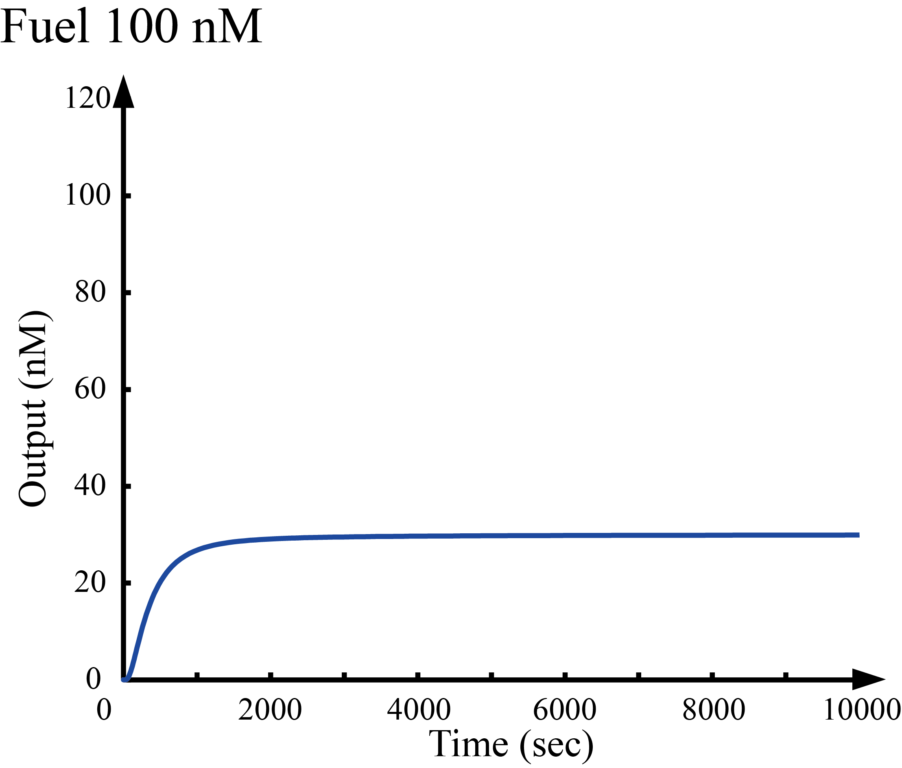
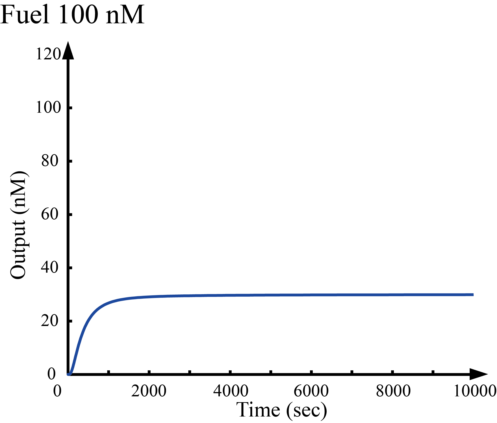

-
Wet Experiment
Experiment1 Groundの設計DNA Walkerが走行する足場となるDNA構造物(Ground)がきちんと作られるのかを確認する。この際、適切なアニーリング条件を見つけるために、アニーリング時間を1，5，10時間の3パターン準備した。。 Groundは図に示すようにGround A,B,Cをインキュベートすることで作成される。我々は、適切にGround A,B,Cが一本鎖DNAのC1,C2を介して結合していることを確認するため次のような電気泳動実験を行った。 Ground A,B,Cはそれぞれ70bp程度なのでGroundは200bp程度であることが予測できる。しかし、アニーリング時間を1，5，10時間で変化させたどの場合であったとしても200bp付近にバンドを持つような結果を得ることはできなかった。 今回、ヘアピン構造をもつS1,S2は加えずにアニーリングを行ったため、G1,G2,G3が一本鎖の状態で存在している場所があり、その部分から更に小さく折りたたまれるような構造になったのではないかと考えられる。
Confirm whether the DNA structure (Ground) that is the track on which DNA Walker runs is properly made. In this case, three patterns of annealing time of 1, 5, and 10 hours were prepared in order to find an appropriate annealing condition. Ground is created by incubating Ground A, B, C as shown in the figure. In order to confirm that Ground A, B and C are properly bound via C1 and C2 of single-stranded DNA, we carried out the following electrophoresis experiments. Since Ground A, B, C are each about 70 bp, it can be predicted that Ground is about 200 bp. However, it was impossible to obtain a result having a band near 200 bp in any cases where the annealing time was changed in 1, 5, 10 hours. Since annealing was carried out without S1 and S2 having a hairpin structure this time, there is a place where G1, G2, G3 are present in a single-stranded state, and the structure is such that it is folded further smaller from that part what it was.
.png) Experiment2 DSD containing mismatched base pair
Experiment2 DSD containing mismatched base pair
Wells 試薬 ① DNAラダー ② Ground A + B + C (1 h) ③ Ground A + B (1 h) ④ Ground B + C (1 h) ⑤ Ground A + B + C (5 h) ⑥ Ground A + B (5 h) ⑦ Ground B + C (5 h) ⑧ Ground A + B + C (10 h) ⑨ Ground A + B (10 h) ⑩ Ground B + C (10 h) ⑪ C1 ⑫ C2 -
Dry Experiment
私たちはTractorの進み具合がFuelの濃度に依存することを確認するためにMatlab[1]を用いてシミュレーションを行った。TractorとGroundの初期濃度は100(nM)とし、Fuelの初期濃度を50,100,150,200(nM)としてOutputの時間濃度変化をシミュレーションした。さらに、時刻を10000(sec)に固定しFuelの初期濃度を0から500nMにまで変化させた際のOutputの濃度変化のシミュレーションを行った。 図１から４より、Outputの濃度変化がFuelの初期濃度に依存していることが確認でき、図５よりFuelの初期濃度が一定の値を越えると急激にOutputの濃度が上昇していることが読み取れる。また、Spotの段数を１段、２段、３段と増やすにつれて、閾値を超えた際のOutputの濃度上昇が急激になっていることがわかる。
We simulated with Matlab[1] to confirm that the process of Walker depends on the initial concentration of Fuel. We simulated the time concentration change of Output after setting the initial concentration of Walker and Ground in 100 nM, and Fuel in 50,100,150,200 nM. Also, we simulated the time concentration change of Output when changing the initial concentration of Fuel from 0 to 500 nM with fixing time as 10000 seconds. From figure 1 to 4 we find that the time concentration change of Output depends on the initial concentration of Fuel, and figure 5 says that the concentration of Output increased rapidly when the initial concentration of Fuel is given more than specific value. Additionally, concentration of Output has increased rapidly above threshold as increase levels of Spot one by one (Version A,B, and C).
 



-
Reference
[1]Matlab: http://jp.mathworks.com/products/matlab/